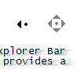
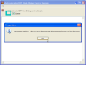
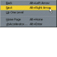

High Resolution Multimedia Timer
High Resolution Multimedia Timer
 Subclassing and Hooking with Machine Code Thunks
Subclassing and Hooking with Machine Code Thunks

Hooks Index
Windows Hooks give you the ultimate low-level control over how Windows work. If you're trying to do something that's not obvious how to do any other way, then a Hook may well be the answer.
Win32 Hooks in VB - The vbAccelerator Hook LibraryWhen a subclass isn't tough enough for the job, its time to move to an even lower-level and more disruptive technique. Win32 Hooks are a method by which you can tap into the Windows message stream for every single message directed to every window in your application. You can modify or even discard messages before they even reach the target window. This technique gives you a lot of control! Last Updated: 27 June 2003 | |
|  | Scrolling on the Middle Mouse ButtonProvides a class that allows you to perform auto-scrolling from the middle Mouse button just like in IE. Last Updated: 24 January 2004 |
 | Enabling Mouse Gestures with a WH_MOUSE hookUse of mouse gestures to control application is becoming increasingly common in the more sophisticated web browsers. This sample demonstrates how you can support a range of mouse gestures in a Visual Basic application using a Windows Hook. Last Updated: 23 October 2003 |
|  | Using CBT Hooks to Centre API DialogsWindows sometimes places Common Dialogs and Message Boxes at the "wrong" position on the screen. Whilst there are some ways of working around this for Common Dialogs, a more general solution which applies to any Windows dialog is to use a CBT (Computer-Based Training) Windows Hook. These Hooks provide notification when any Window in your process is created, activated, focused, moved or destroyed. Last Updated: 27 June 2003 |
 | Using a Journal Record Hook to Capture Mouse and Key Events from any System WindowNormally, a Windows hook used in Visual Basic can only act on Windows within the process in which it is running. The exception to this rule is the Windows Journal Hook, which allows capturing of mouse and keyboard events from any Window on the system. Many thanks to the coder known only by his email alias "Mr Yummys" for sending the original sample which showed how to use this technique and on which the demonstration is derived. Last Updated: 27 June 2003 |
|  | vbAccelerator Accelerator ControlIf you've ever tried to pick a keyboard accelerator for the menu items Back and Next in your application, you might have discovered a limitation in VB's ability to set up accelerators. IE offers some sensibly chosen keyboard accelerators for its Back, Next, Home shortcuts, using Alt and the arrow and Home keys, but you won't be able to set them up in standard VB. Another thing that can be annoying is that you cannot set up accelerators at run-time, only at design time. This means if you are loading custom menus then you won't be able to give them an accelerator. This control allows you to work around both of these problems. Last Updated: 25 August 1999 |